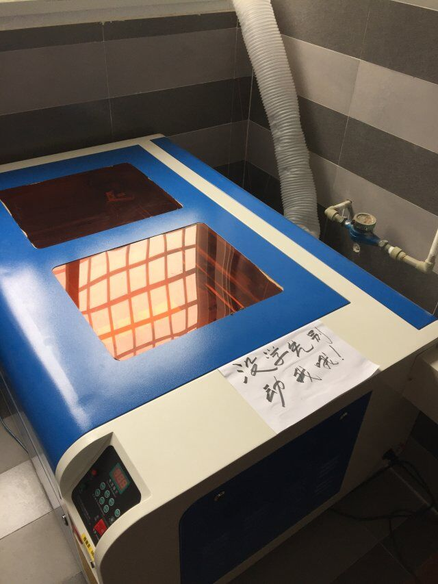
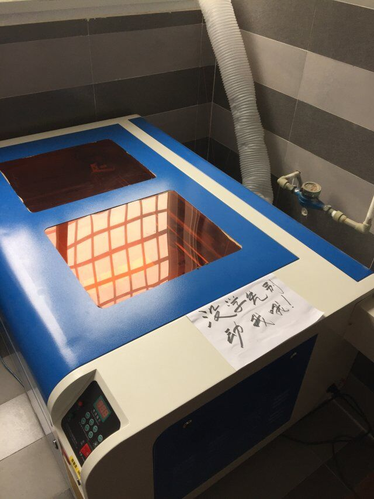

welcome！！！学习Codes2Things有感
教学内容是由许多知识点构成，由点形成线，由线完成相对独立的知识体系，构成彼此联系的知识网。因此明确目标，就要在上新课时了解本课知识点在知识网中的位置，在复习时着重从宏观中把握微观，注重知识点的联系。另外，要明确知识点的难易程度，应该掌握的层次要求，即识记、理解、应用、分析、综合、评价等不同层次，最重要的就是明确学习重要目标，即知识重点。有了目标能增强我们学习的注意力与学习动机，即为了这目标我必须好好学习。
Designer Templates设计家的思索
We’ve crafted some handsome templates for you to use. Go ahead and click 'Continue to layouts' to browse through them. You can easily go back to edit your page before publishing. After publishing your page, you can revisit the page generator and switch to another theme. Your Page content will be preserved.
手工制作
If you prefer to not use the automatic generator, push
 

参加MAKERFAIRE


作者寄语
创作的过程中，通过自己的努力以及与同学的交流，完成了创作，整个过程中体验到在创作中创造了思维，感受到了快乐，努力的成就快乐以及完成作品的满足感。 element will link to the contributor’s GitHub Profile. For example: In 2007, Chris Wanstrath (@defunkt), PJ Hyett (@pjhyett), and Tom Preston-Werner (@mojombo) founded GitHub.
感谢
Having trouble with Pages? Check out our documentation or contact support and we’ll help you sort it out.